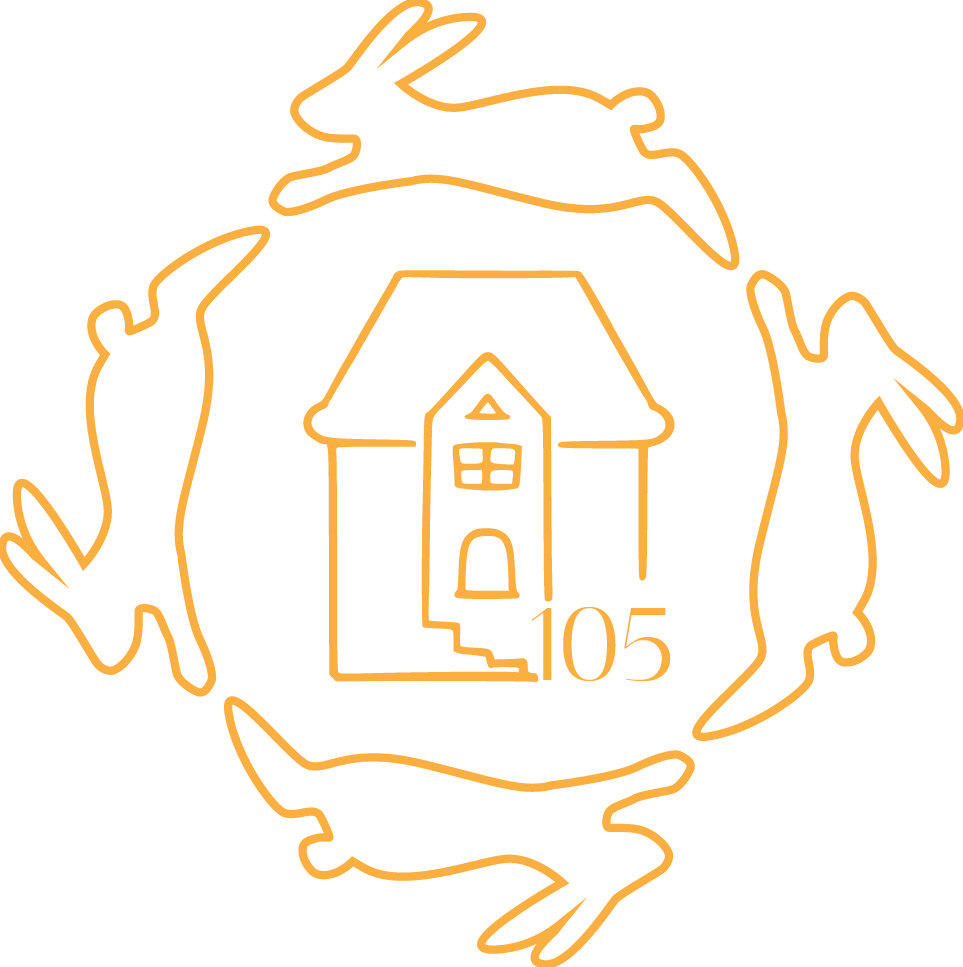

“Where should I go?” — Alice
“That depends on where you want to end up.” — The Cheshire Cat
Follow us down the rabbit hole... for a world of wonders.
Le Cirque des Rêves Oubliés is back in town! On September 13, the curtains to Wonderland open at Textor.




4 FLOORS • 5 ROOMS • 1 GARDEN
Workshops • DJs • Live Music • Interactive Sessions • Surprise Acts
Dress code:
To help keep the show on the road, the director suggests an entrance donation of . If times are tough, a reduced admission of still goes a long way.
This curated experience starts at , with the central tea ceremony at . Don't be late!
“I knew who I was this morning, but I've changed a few times since then.”
— Alice
